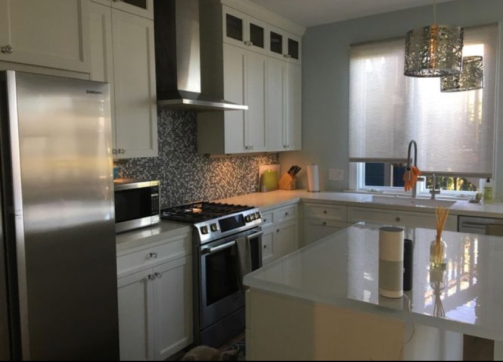
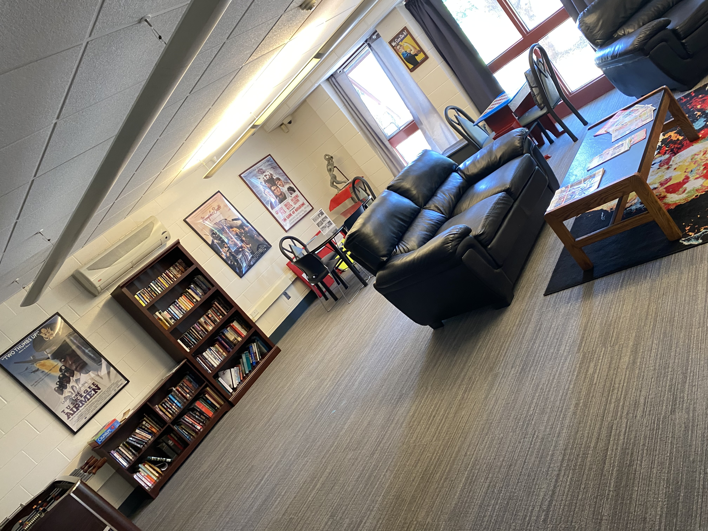
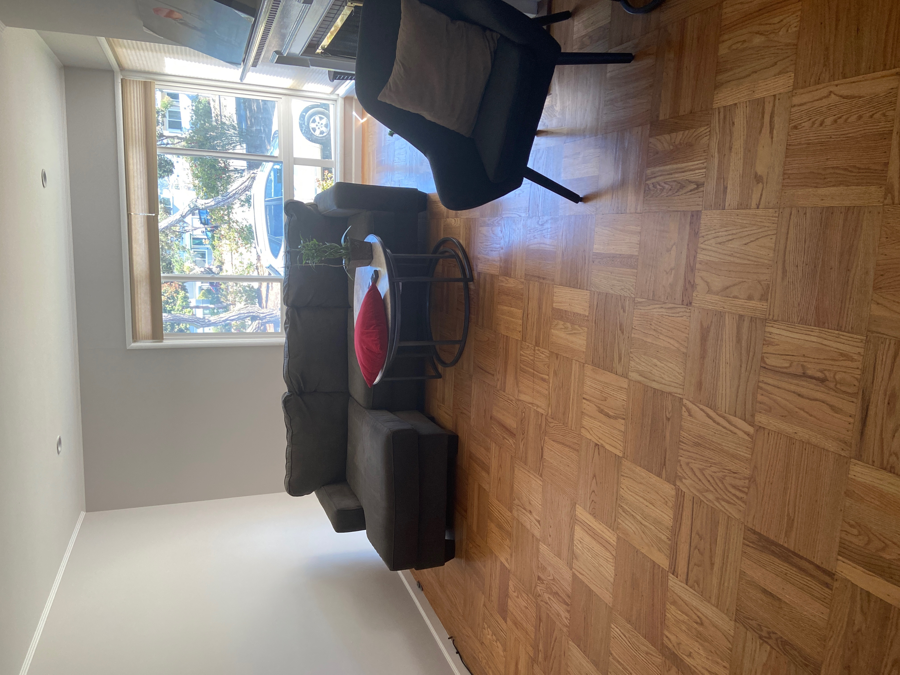

Apartment and Office cleaning in San Francisco: just a phone call or click away.
We understand life can get busy, and house cleaning sometimes falls to the bottom off the priority list, or it’s just something you don’t want to do! No worries, let us handle that chore for you so you can relax, and live your life. We proudly offer the following services...

Apartment
Our apartment services included:
| ✓ Bedroom, Living Room & Common Areas |
| ✓Dust all accessible surfaces |
| ✓Wipe down all mirrors and glass fixtures |
| ✓ Clean all floor surfaces |
Bathroom Cleaning:
| ✓Wash and sanitize the toilet, shower, tub, and sink |
| ✓Dust all accessible surfaces. |
| ✓Wipe down all mirrors and glass fixtures. |
| ✓Clean all floor surfaces. |
Kitchen Cleaning:
| ✓Dust all accessible surfaces |
| ✓Empty sink and load up dishwasher with dirty dishes. |
| ✓Wipe down exterior of stove, oven, and fridge |
| ✓Clean all floor surfaces. |
| ✓Extras(highlight bold) |
| ✓For a deeper clean, consider adding one or more cleaning extras. |
| ✓Most cleaning extras add one-half hour of time and cost to your booking. |
| ✓Inside cabinets |
| ✓Inside fridge |
| ✓Inside oven |
| ✓Laundry wash & dry |
| ✓Interior windows< |
| ✓Take out garbage and recycling. |
| ✓ |

Office
Our comprehensive cleaning and disinfection process combines advanced cleaning protocols, disinfection best practices, and modern tools and technology that result in an exceptionally clean and sanitary facility. Our service providers first clean your surfaces using a general-purpose or bioactive cleaner or degreaser using microfiber cleaning cloths and mops. All surfaces are then disinfected using CDC- and EPA-approved processes, equipment, and products with a focus on curved and hard-to-reach surfaces and the following high-touch surfaces.
High-Touch Surfaces:
| ✓Door Handles And Knobs.
|
| ✓Coffee Machines. |
| ✓Copier, Printer And Fax Control Buttons |
| ✓Cabinet And File Drawer Handles
|
| ✓Chair Arms |
| ✓Desks |
| ✓Countertops
|
| ✓Front Desk And Lobby Surfaces |
| ✓Entryway Doors |
| ✓Equipment Controls |
| ✓Wheelchairs And Walkers |
| ✓Computer Keyboards And Mouse Devices
|
| ✓Remote Controls |
| ✓Recreation Equipment |
| ✓Light Switches |
| ✓Handrails |
| ✓Elevator Buttons And Pads |
| ✓Phones |
| ✓Sinks And Faucets |
| ✓Restroom Stalls And Dispensers |
| ✓Vending Machines |
| ✓Food Preparation Surfaces |
| ✓Breakroom, Restaurant, And Cafe Tables And Chairs |

Moving
Here Is A Move Out Cleaning Checklist:
| ✓ Counter tops and Backsplash. |
| ✓ Sinks and Fixtures. |
| ✓ Inside & Outside of Cabinets and Drawers. |
| ✓ Outside of Large Appliances. |
| ✓ Inside of Microwave, Refrigerator, and Oven. |
| ✓ Stove top. |
| ✓ Move stove and clean down and around. (This is required by property management in a move out cleaning.) |
| ✓ Move Fridge, clean down and around. (This is also required by property management in this type of cleaning.) |
| ✓ Dusting. |
| ✓ Interior Glass, Blinds, Ledges, Baseboards, etc. |
| ✓ Sweeping & Mopping Hard Surface Floors, Vacuuming Carpets and Rugs. |
Move Out Bathrooms Cleaning Checklist:
| ✓ Showers and Bathtubs. |
| ✓ Clean The Toilets. |
| ✓ Counter tops. |
| ✓ Sinks and Fixtures. |
| ✓ All Mirrors. |
| ✓ Inside & Outside of Cabinets and Drawers. |
| ✓ Dusting. |
| ✓ Interior Glass, Blinds, Ledges, Baseboards, etc. |
| ✓ Sweeping & Mopping Hard Surface Floors, Vacuuming Carpets and Rugs.
|
Move Out Bedrooms and Common Living Areas Checklist:
| ✓ Dusting Light Fixtures and Ceiling Fans. |
| ✓ Dusting for cobwebs. |
| ✓ Blinds. |
| ✓ Interior Glass: Windows, Doors, Mirrors, etc. |
| ✓ Light switch and Outlet Covers. |
| ✓ Trimwork and Molding. |
| ✓ Doors and Door Frames (including the outside of glass/french doors)
Baseboards. |
| ✓ Dusting Intake Vents and Air Return Vents. |
| ✓ Sweeping & Mopping Hard Surface Floors, Vacuuming Carpets and Rugs. |
What We Use
| ✓Cleaning bucket (with 2 dividers to keep supplies in) |
| ✓Disinfectant cleaner |
| ✓Soap scum remover |
| ✓Chemical trigger sprayers |
| ✓3M light duty scrub pads and holder |
| ✓Toothbrushes |
| ✓Microfiber heavy-duty waffle cloths (for shower walls and tubs) |
| ✓Premium microfiber glass cloths |
| ✓Powder Bon-Ami (for shower and tub bottoms) |
| ✓Vacuum cleaner for carpets (I recommend either a ProTeam backpack or Oreck upright) |
| ✓Vacuum cleaner for hard floors (I recommend either a ProTeam backpack, handheld hoover, or a two-speed Oreck upright) |
| ✓Microfiber mop or here |
| ✓Microfiber wet mop pads |
| ✓Ph neutral floor cleaner |
| ✓Microfiber short duster or here |
| ✓Microfiber long duster |
| ✓Microfiber dust mitt |
| ✓Knee pads |
| ✓Backpacks or tote bags (to carry clean and dirty rags) |
| ✓ Disposable nitrile cleaning gloves |
These are the exact cleaning products I use in my own house, cleaning business, or highly recommend. This list should help you to get up and running! And all these can be provided by our company each visit, the customer can provide them or we can do the shopping and you'd just re inverse based on the receipt.
— Maby Delmira
What sets us apart
One of the best things you can enjoy about our company is that you pick what kind of chemicals you'd like us to use, from organic and natural products only, to hard and tough products depending on the job's needs and the customer's preferences.
We also cater to the needs and requests of each household to improve with time. Our goal is to use the same staff for each job with the same client to better understand what is expected and form a better experience for everyone.